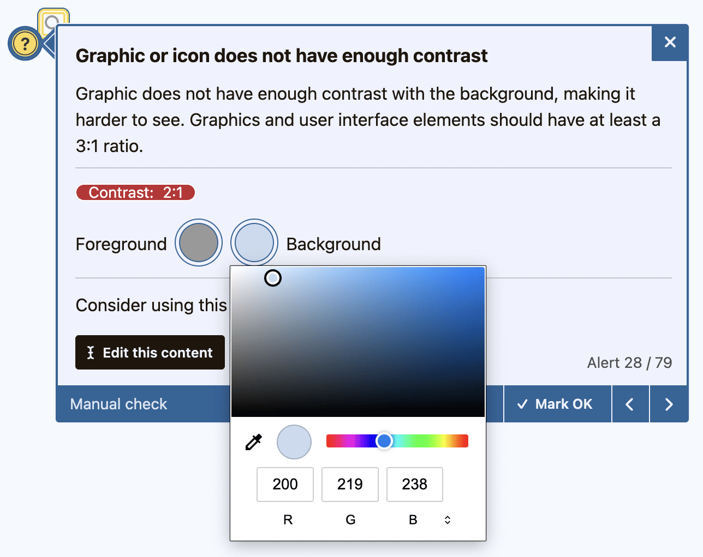

<main class="container col-lg-12 mx-auto py-5">
  <div class="row docs">
    <div class="col-12 col-md-5 col-lg-4 mb-5">
      <div id="on-this-page" class="list-group ms-2 ms-lg-5 position-sticky top-0 pt-3">
      </div>
    </div>
    <div class="col-12 col-md-7 col-lg-8 pt-3">
      <div data-bs-spy="scroll" data-bs-target="#on-this-page" data-bs-smooth-scroll="true">
        <section id="features">
          <h1 class="text-body-emphasis pt-2 pb-5" data-i18n-id="s-3943">الميزات</h1>
          <p class="fs-6" data-i18n-id="s-b729">تكتشف الاختبارات الأساسية في Editoria11y أكثر من 50 مشكلة شائعة في إمكانية الوصول إلى المحتوى:
            قرارات
            تضر بوضوح القراءة، وأخطاء تقلل فاعلية قارئات الشاشة، وأخطاء تُضعف ظهور الصفحات في محركات البحث.</p>
          <p class="fs-6" data-i18n-id="s-0c4a">توفر الحزم الإضافية نحو 40 اختبارًا إضافيًا للمطورين والمصممين، واختبارات
            مخصصة، وأدوات متنوعة
            لضمان الجودة على مستوى الموقع.</p>
          <p class="fs-6" data-i18n-id="s-0887">تركز اختبارات المحتوى على المشكلات التي تظهر <strong>بعد</strong> تسليم
            المواقع إلى
            كتّاب المحتوى. يجب اختبار المواقع بأدوات التدقيق اليدوي ولوحات المفاتيح وقارئات الشاشة قبل
            إطلاقها، لكن حتى الموقع الأكثر قابلية للوصول يوم إطلاقه يميل إلى التراجع مع الوقت، إذ تجلب التعديلات معها مشكلات جديدة.</p>
          <p class="fs-6" data-i18n-id="s-44f1" data-og="description">ما يميز Editoria11y عن غيره من أدوات إمكانية الوصول
            أن اختباراته تعمل مباشرةً داخل
            المتصفح، أثناء تحرير كتّاب المحتوى لأعمالهم ومعاينتها. <strong>فكتّاب المحتوى أكثر استجابةً للملاحظات
              الفورية المضمّنة في الصفحة</strong>، فيلاحظون التنبيهات ويُجرون التصحيحات، بدلًا من أن يُضطروا إلى تذكّر زيارة
            لوحة التحكم أو إجراء فحص يدوي.</p>
        </section>
        <section id="authoring">
          <h2 data-i18n-id="s-fec2">تجربة كاتب المحتوى</h2>
          <div class="clearfix">
            
            <p data-i18n-id="s-ca49">يرى كتّاب المحتوى شريط أدوات Editoria11y أثناء تحرير المحتوى. وعند اكتشاف مشكلات،
              يتحوّل لونه إلى الأصفر أو
              الأحمر ويعرض عدد المشكلات. ويؤدي النقر على العدد إلى الانتقال إلى أول تنبيه وفتح تلميحه.</p>
          </div>
          <div class="row">
            
            <p class="col-6 col-lg-4 align-content-center" data-i18n-id="s-6a38">تظهر النصائح مضمّنة في الصفحة، مع وصف
              للخطأ بلغة
              بسيطة، واقتراحات لتصحيحه، وملاحظات توضح أهمية المشكلة.</p>
          </div>
          <div class="row">
            
            <p class="col-6 col-lg-4 align-content-center" data-i18n-id="s-f5e0">يضم شريط الأدوات أدوات إضافية
              للفحوصات اليدوية،
              منها أداتا عرض هيكل العناوين والنص البديل، وتقييم سهولة القراءة.</p>
          </div>
        </section>
        <section id="admins">
          <h2 data-i18n-id="s-c5cb">أدوات التحكم لمسؤولي الموقع</h2>
          <p data-i18n-id="s-c155">يمكن تخصيص كل جانب مرئي من المدقق. إذ تتيح المعاملات والأحداث
            إزالة الاختبارات،
            وإعادة صياغة النصائح، وإدراج اختبارات مخصصة، وتعيين قوالب مخصصة.</p>
          <p data-i18n-id="s-e2f8">تضيف وحدة Drupal وإضافة WordPress ميزات أخرى، مثل مزامنة عمليات
            التجاهل، ولوحات تحكم
            على مستوى الموقع، وتصدير التقارير بصيغة CSV.</p>
          <figure class="figure my-4 rounded shadow mb-5 border">
            
            <figcaption class="figure-caption p-3 pt-2" data-i18n-id="s-f804">لوحة تحكم Drupal، وتضم
              قوائم قابلة للتصفية بالمشكلات،
              والصفحات التي تحتوي على مشكلات، وعمليات التجاهل.</figcaption>
          </figure>
        </section>
        <section id="tests">
          <h2 data-section="tests" data-i18n-id="s-7aa7">الاختبارات</h2>
          <p class="fs-6" data-i18n-id="s-4c74">تركز اختبارات Editoria11y على تحسين تجربة الويب لجميع
            المستخدمين كما
            يقيسها البشر، لا المعايير التقنية وحدها. وبينما تهدف الاختبارات الرئيسية إلى المساعدة على استيفاء إرشادات إمكانية الوصول إلى محتوى الويب
            (<a href="https://www.w3.org/WAI/WCAG22/quickref/">WCAG 2.2 AA</a>)، يستند بعضها الآخر إلى
            عمل <a href="https://www.w3.org/TR/coga-usable/">فريق عمل إمكانية الوصول لذوي الإعاقات المعرفية
              وصعوبات التعلم</a>، إضافةً إلى أفضل الممارسات العامة في قابلية الاستخدام والتصميم.</p>
          <p class="fs-6 pb-3" data-i18n-id="s-acaf">يمكن لمسؤولي الموقع إيقاف أي اختبار على حدة.</p>
          <div class="row listgrid">
            <div class="col-12 col-xl-4">
              <h3 class="fs-5 nomenu pt-0" data-i18n-id="s-d4f0">النص البديل للصور</h3>
              <ul>
                <li data-i18n-id="s-91d8">صورة بلا سمة alt</li>
                <li data-i18n-id="s-82dc">النص البديل اسم ملف</li>
                <li data-i18n-id="s-b384">النص البديل نص مؤقت («غير محدد»)</li>
                <li data-i18n-id="s-e9d8">النص البديل رموز لا يمكن نطقها</li>
                <li data-i18n-id="s-a464">النص البديل يحتوي على كلمات زائدة («صورة لـ&hellip;»)</li>
                <li data-i18n-id="s-d390">النص البديل طويل جدًا</li>
                <li data-i18n-id="s-98b4">صورة زخرفية قد تحمل معنى مهمًا</li>
                <li data-i18n-id="s-b3f7">صورة في عرض شرائح معلَّمة بأنها زخرفية</li>
                <li data-i18n-id="s-046e">صورة ذات تسمية توضيحية بلا نص بديل</li>
                <li data-i18n-id="s-27e8">النص البديل يكرر التسمية التوضيحية</li>
              </ul>
              <h3 class="fs-5 nomenu pt-0" data-i18n-id="s-7416">الصور المرتبطة بروابط</h3>
              <ul>
                <li data-i18n-id="s-4344">صورة مرتبطة برابط بلا نص بديل</li>
                <li data-i18n-id="s-a829">النص البديل لصورة مرتبطة عنوان URL أو اسم ملف</li>
                <li data-i18n-id="s-7a28">النص البديل لصورة مرتبطة نص مؤقت</li>
                <li data-i18n-id="s-545b">النص البديل لصورة مرتبطة رموز لا يمكن نطقها</li>
                <li data-i18n-id="s-f97b">النص البديل لصورة مرتبطة يصف الصورة لا الرابط</li>
                <li data-i18n-id="s-331e">النص البديل لصورة مرتبطة يحتوي على كلمات زائدة</li>
                <li data-i18n-id="s-4ee3">النص البديل لصورة مرتبطة طويل جدًا</li>
                <li data-i18n-id="s-114e">صورة داخل رابط نصي بلا سمة alt</li>
              </ul>
              <h3 class="fs-5 nomenu pt-0" data-i18n-id="s-b0ee">الوسائط المضمّنة</h3>
              <ul>
                <li data-i18n-id="s-561c">الفيديو يحتاج إلى ترجمة نصية</li>
                <li data-i18n-id="s-e31b">الملف الصوتي يحتاج إلى تفريغ نصي</li>
                <li data-i18n-id="s-edcb">التمثيل المرئي للبيانات يحتاج إلى بديل قابل للوصول</li>
                <li data-i18n-id="s-28a4">إطار مضمّن بلا عنوان</li>
                <li data-i18n-id="s-bf38">إطار مضمّن مستبعد من التنقل بلوحة المفاتيح</li>
                <li data-i18n-id="s-10cc">محتوى الإطار المضمّن يحتاج إلى فحص يدوي لإمكانية الوصول</li>
                <li data-i18n-id="s-4cec">المستند المرتبط قد لا يكون قابلًا للوصول بقارئ الشاشة</li>
                <li data-i18n-id="s-a85e">ملف PDF بلا بديل قابل للوصول</li>
                <li data-i18n-id="s-4b56">مكوّنات تخطيط تفاعلية متداخلة</li>
              </ul>
            </div>
            <div class="col-12 col-xl-4">
              <h3 class="fs-5 nomenu pt-0" data-i18n-id="s-8c93">روابط ذات معنى</h3>
              <ul>
                <li data-i18n-id="s-0ade">رابط فارغ</li>
                <li data-i18n-id="s-4427">نص الرابط عنوان URL</li>
                <li data-i18n-id="s-3520">نص الرابط مجرد رقم DOI</li>
                <li data-i18n-id="s-d515">نص الرابط «انقر هنا»</li>
                <li data-i18n-id="s-65bb">نص الرابط كلمات عامة فقط («اقرأ المزيد»)</li>
                <li data-i18n-id="s-dd2d">روابط مختلفة تحمل النص نفسه</li>
                <li data-i18n-id="s-0d39">أيقونة أو صورة مرتبطة بلا بديل نصي</li>
                <li data-i18n-id="s-5a53">رابط يفتح علامة تبويب جديدة دون إشعار</li>
                <li data-i18n-id="s-cf05">رابط يؤدي إلى ملف دون إشعار</li>
                <li data-i18n-id="s-cb51">نص الرابط رموز أو رموز تعبيرية فقط</li>
                <li data-i18n-id="s-99ab">نص رابط ذو معنى مخفي عن المستخدمين المبصرين</li>
                <li data-i18n-id="s-06c2">تلميح رابط مكرر بلا فائدة</li>
                <li data-i18n-id="s-05ce">رابط مرساة معطّل داخل الصفحة</li>
                <li data-i18n-id="s-d4d1">سمة ID مكررة</li>
                <li data-i18n-id="s-98a1">الرابط قد يشير إلى بيئة تطوير</li>
              </ul>
              <h3 class="fs-5 nomenu pt-0" data-i18n-id="s-80ff">العناوين</h3>
              <ul>
                <li data-i18n-id="s-6d85">الصفحة بلا «عنوان 1»</li>
                <li data-i18n-id="s-fcfb">العنوان الأول عنوان فرعي</li>
                <li data-i18n-id="s-0ec0">عنوان يتخطّى مستوى</li>
                <li data-i18n-id="s-8e95">عنوان فارغ</li>
                <li data-i18n-id="s-0e78">صورة مستخدمة عنوانًا تحتاج إلى نص بديل</li>
                <li data-i18n-id="s-9685">عنوان طويل جدًا</li>
                <li data-i18n-id="s-d7a5">فقرة بخط عريض قد تكون عنوانًا</li>
                <li data-i18n-id="s-7f66">اقتباس قصير قد يكون عنوانًا</li>
              </ul>
              <h3 class="fs-5 nomenu pt-0" data-i18n-id="s-1fca">وضوح النص</h3>
              <ul>
                <li data-i18n-id="s-42f3">إفراط في النص المكتوب بالأحرف الكبيرة</li>
                <li data-i18n-id="s-a546">كتلة كبيرة من النص العريض أو المائل</li>
                <li data-i18n-id="s-2896">النص صغير جدًا</li>
                <li data-i18n-id="s-8c2e">نص مسطَّر ليس رابطًا</li>
                <li data-i18n-id="s-b9bd">النص مضبوط من الجهتين</li>
                <li data-i18n-id="s-4d3b">نص منخفض أو مرتفع مستخدم لأغراض التنسيق</li>
                <li data-i18n-id="s-9809">قائمة زائفة مكتوبة بأحرف أو رموز</li>
                <li data-i18n-id="s-efec">عنصر قائمة خارج القائمة</li>
              </ul>

            </div>
            <div class="col-12 col-xl-4">
              <h3 class="fs-5 nomenu pt-0" data-i18n-id="s-aaa0">تباين الألوان</h3>
              <ul>
                <li data-i18n-id="s-fbfd">تباين النص غير كافٍ</li>
                <li data-i18n-id="s-1dba">تباين النص يحتاج إلى فحص يدوي</li>
                <li data-i18n-id="s-3076">تباين الأيقونة أو الرسم غير كافٍ</li>
                <li data-i18n-id="s-0e1d">تباين الأيقونة أو الرسم يحتاج إلى فحص يدوي</li>
                <li data-i18n-id="s-2f82">تباين النص في حقل الإدخال غير كافٍ</li>
                <li data-i18n-id="s-0936">تباين النص النائب غير كافٍ</li>
              </ul>
              <h3 class="fs-5 nomenu pt-0" data-i18n-id="s-f99a">الجداول</h3>
              <ul>
                <li data-i18n-id="s-00d1">جدول بلا صف ترويسة أو عمود ترويسة</li>
                <li data-i18n-id="s-82fd">خلية ترويسة فارغة في الجدول</li>
                <li data-i18n-id="s-c8f0">عنوان محتوى مستخدم داخل جدول</li>
              </ul>
              <h3 class="fs-5 nomenu pt-0" data-i18n-id="s-fa30">النماذج والعناصر التفاعلية</h3>
              <ul>
                <li data-i18n-id="s-021d">زر بلا تسمية قابلة للوصول</li>
                <li data-i18n-id="s-7bb8">زر بتسمية ARIA غير صالحة</li>
                <li data-i18n-id="s-308a">تسمية الزر تتضمن كلمة «زر»</li>
                <li data-i18n-id="s-0e58">التسمية المرئية لا تطابق الاسم القابل للوصول</li>
                <li data-i18n-id="s-91b6">حقل إدخال بلا تسمية مرتبطة به</li>
                <li data-i18n-id="s-6b9e">حقل إدخال لا يملك سوى تسمية غير مرئية</li>
                <li data-i18n-id="s-beae">حقل إدخال يستخدم النص النائب وحده تسميةً له</li>
                <li data-i18n-id="s-f49d">زر إعادة التعيين قد يتسبب في فقدان البيانات عن غير قصد</li>
                <li data-i18n-id="s-b69f">عنصر مخفي عن قارئات الشاشة لكنه لا يزال قابلًا للتركيز بلوحة المفاتيح</li>
                <li data-i18n-id="s-7ef1">قيمة tabindex موجبة تُخلّ بترتيب القراءة والتنقل بمفتاح Tab</li>
              </ul>
              <h3 class="fs-5 nomenu pt-0" data-i18n-id="s-b6e6">البيانات الوصفية للصفحة</h3>
              <ul>
                <li data-i18n-id="s-1824">عنوان الصفحة مفقود</li>
                <li data-i18n-id="s-0c64">لغة الصفحة غير محددة</li>
                <li data-i18n-id="s-bba1">إعدادات إطار العرض تمنع تكبير النص</li>
                <li data-i18n-id="s-ccce">الصفحة تُحدَّث تلقائيًا</li>
              </ul>
            </div>
          </div>
        </section>
        <section class="row mt-5 pt-5" id="csa">
          <h2 class="pt-3" data-section="csa" data-i18n-id="s-d6f4">ميزات CSA</h2>

          <p class="fs-5" data-i18n-id="s-cb40">
            يعزّز Editoria11y إمكانية الوصول بطريقة فريدة؛ فأدواته فعّالة للغاية في مساعدة كتّاب المحتوى غير
            المتخصصين تقنيًا على إعداد محتوى يستمتع به مستخدمو الويب من ذوي الإعاقة على قدم المساواة مع غيرهم. ونعدّ ذلك منفعةً عامة،
            لذا <strong>سيبقى Editoria11y مجانيًا دائمًا</strong>.
          </p>
          <p class="fs-5" data-i18n-id="s-b419">
            لكن تطوير Editoria11y ودعمه ليسا مجانيين.
          </p>
          <p class="fs-5" data-i18n-id="s-7d6d">
            وهنا تسدّ CSA هذه الفجوة: يموّل أعضاء المشروع تطوير مكتبة Editoria11y وإضافاتها لأنظمة إدارة المحتوى،
            ومجموعة CSA، وهي مجموعة سريعة النمو من أدوات ضمان الجودة مفتوحة المصدر تقدّم وظائف مماثلة
            لما تقدّمه المنتجات مغلقة المصدر، بسعر أقل بكثير.
          </p>
          <figure class="figure my-4 shadow border rounded p-0 m-2 col-sm-12 col-xl-11">
            
            <figcaption class="figure-caption p-2 pt-2" data-i18n-id="s-8a9c">زاحف CSA يحدّث إحدى لوحات التحكم.
            </figcaption>
          </figure>

        </section>
        <section id="csa-tools" class="pb-5 mt-5 row g-5">

          <div class="mt-2">
            <h3 class="pt-3" data-section="csa-tools" data-i18n-id="s-a391">أدوات CSA</h3>
            <ul class="fs-5">
              <li data-i18n-id="s-fd2b">
                اختبارات للمطورين وسهولة القراءة والتباين.
              </li>
              <li data-i18n-id="s-c3ea">
                إعدادات منفصلة حسب الدور للمطورين وصنّاع المحتوى.
              </li>
              <li data-i18n-id="s-63c7">
                أدوات لبناء اختبارات مخصصة.
              </li>
              <li data-i18n-id="s-3a31">
                تجاهل التنبيهات على مستوى الموقع بنقرة واحدة
              </li>
              <li data-i18n-id="s-1664">
                أدوات صيانة لوحات التحكم وبرامج الزحف
              </li>
            </ul>
            
          </div>

        </section>
        <section id="benefits" class="pb-5 mt-5 row g-5">


          <div class="">
            <h3 class="pt-0" data-section="benefits" data-i18n-id="s-9274">مزايا عضوية CSA</h3>
            <ul class="fs-5">
              <li data-i18n-id="s-fa04">دعم ذو أولوية.</li>
              <li data-i18n-id="s-b33f">تأثير مرجَّح في خارطة طريق المشروع.</li>
              <li data-i18n-id="s-6864">وصول تلقائي إلى الميزات الجديدة في خارطة الطريق.</li>
              <li data-i18n-id="s-cc94">مساعدة مباشرة في الإعداد (بحسب المستوى).</li>
              <li data-i18n-id="s-42a4"><a href="https://form.jotform.com/260627656020150">ذِكر علني لاسم الداعم</a>
                (بحسب المستوى أو
                عند الطلب؛ تُطبَّق الشروط).</li>
            </ul>

            <h3 class="nomenu" data-i18n-id="s-8335">هل أنت مهتم؟</h3>
            <p class="fs-5" data-i18n-id="s-e62a">تُدعَم مجموعة CSA وفق نموذج «ساهم بما تستطيع».
              أما جوهر Editoria11y، أي المكتبة والإضافات، فسيبقى مجانيًا إلى الأبد.</p>
            <p class data-i18n-id="s-eebc"><a class="btn btn-primary" href="/en/license/">انضم إلى CSA</a></p>

          </div>

        </section>

      </div>
    </div>


  </div>
</main>